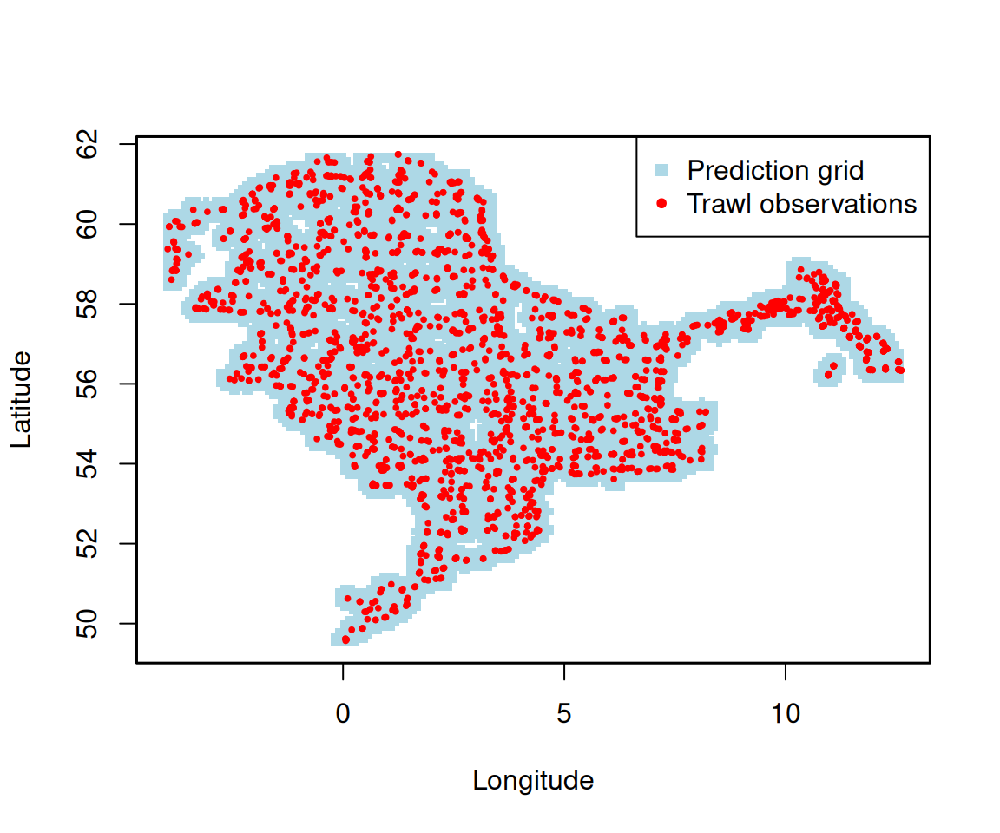

Building a spatiotemporal prediction grid
Source:vignettes/articles/make_spatiotemporal_grid.Rmd
make_spatiotemporal_grid.RmdThis article shows how to build a regular prediction grid over a
survey domain with make_survey_grid(), and how to extend it
into a spatiotemporal grid by repeating it across years. Such a
grid is a common input for spatial and spatiotemporal species
distribution models, where predictions are made on a regular lattice
covering the surveyed area.
We use the example data set dab (dab, Limanda
limanda, from the NS-IBTS
survey, 2020-2023).
## Load the packages
library(DATRASextra)
library(sf)
## Load the example data
data(dab)Disclaimer
This is just one way of building a prediction grid. Choices such as the resolution, the distance threshold, and whether to remove land are subjective and should be tailored to your own data and objectives.
Trawl locations
We start from the unique haul positions in the HH table.
make_survey_grid() works directly on coordinate vectors, so
we only need the lon and lat columns.
## Unique trawl locations
trawls <- unique(dab[["HH"]][, c("haul.id", "lon", "lat")])
head(trawls)
#> haul.id lon lat
#> 1 NS-IBTS:2020:1:NO:58G2:GOV:60055:55 3.2725 59.2533
#> 2 NS-IBTS:2020:1:NO:58G2:GOV:60054:54 3.1695 59.7019
#> 3 NS-IBTS:2020:1:NO:58G2:GOV:60053:53 2.4838 58.6749
#> 4 NS-IBTS:2020:1:NO:58G2:GOV:60052:52 2.7423 58.2584
#> 5 NS-IBTS:2020:1:NO:58G2:GOV:60051:51 3.4483 58.2483
#> 6 NS-IBTS:2020:1:NO:58G2:GOV:60050:50 3.3026 58.8872A spatial grid
make_survey_grid() builds an equally spaced grid
covering the range of the coordinates. resolution and
max_dist are expressed in the same units
as the coordinates — here degrees, because the hauls are in lon/lat. We
use a 0.1° grid and drop grid nodes that are more than 0.3° from any
haul, so the grid stays close to where the survey actually sampled (this
needs the RANN package).
## Regular grid near the trawl observations
grid <- make_survey_grid(
x = trawls$lon,
y = trawls$lat,
resolution = 0.1,
max_dist = 0.3
)
nrow(grid)
#> [1] 8326
head(grid)
#> X Y
#> 1 -0.2 49.5
#> 2 -0.1 49.5
#> 3 0.0 49.5
#> 4 0.1 49.5
#> 5 0.2 49.5
#> 6 0.3 49.5The result is a data frame with columns X and
Y. A quick plot shows the grid following the survey
footprint:
## Grid nodes (blue) and trawl observations (red)
plot(grid$X, grid$Y, pch = 15, col = "lightblue", cex = 0.5,
xlab = "Longitude", ylab = "Latitude")
points(trawls$lon, trawls$lat, col = "red", pch = 20, cex = 0.6)
legend("topright", legend = c("Prediction grid", "Trawl observations"),
col = c("lightblue", "red"), pch = c(15, 20), bg = "white")
box(lwd = 1.5)
For predictions in true distance units, project the coordinates first
(for example to UTM), pass the projected coordinates to
make_survey_grid(), and set resolution and
max_dist in metres or kilometres.
Adding the time dimension
To turn the spatial grid into a spatiotemporal one, pass a
vector of years to time. The spatial grid is then repeated
for each year and a year column is added, giving one row
per grid node and year.
## Repeat the grid across survey years
grid_st <- make_survey_grid(
x = trawls$lon,
y = trawls$lat,
resolution = 0.1,
max_dist = 0.2,
time = 2020:2023
)
nrow(grid_st)
#> [1] 27416
head(grid_st)
#> X Y year
#> 1 -0.1 49.5 2020
#> 2 0.0 49.5 2020
#> 3 0.1 49.5 2020
#> 4 0.2 49.5 2020
#> 5 -0.1 49.6 2020
#> 6 0.0 49.6 2020
## One spatial grid per year
table(grid_st$year)
#>
#> 2020 2021 2022 2023
#> 6854 6854 6854 6854This grid_st data frame - with X,
Y, and year - can be passed directly to a
spatiotemporal model as the set of locations to predict on.
Removing land (optional)
A rectangular grid can include cells that fall on land. If your model domain is sea only, drop those cells. Here we use coastline polygons from Natural Earth and keep only grid nodes that fall in the sea.
library(rnaturalearth)
## Land polygon (WGS84)
land <- st_union(st_make_valid(ne_countries(scale = 10, returnclass = "sf")))
## Keep only grid nodes that are not on land
grid_sf <- st_as_sf(grid, coords = c("X", "Y"), crs = 4326)
on_land <- lengths(st_intersects(grid_sf, land)) > 0
grid_sea <- grid[!on_land, ]Cross grid_sea with the survey years (as above) to
obtain a sea-only spatiotemporal grid.